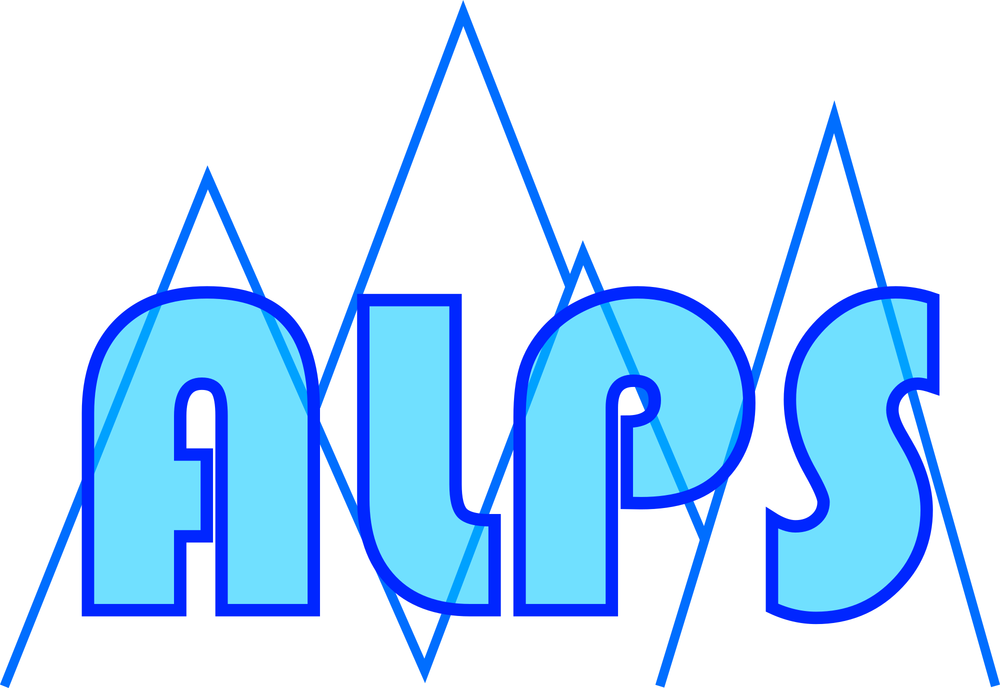

Find us on…
ALPS


The Arbitrary Linear Plasma Solver

ALPS is a parallelised numerical code that solves the Vlasov-Maxwell dispersion relation in hot (even relativistic) magnetised plasma. ALPS allows for any number of particle species with arbitrary gyrotropic equilibrium distribution functions supporting waves with any direction of propagation with respect to the background magnetic field.
If you use the code for a science publication, please provide the code website github.com/danielver02/ALPS in the acknowledgements of your publication and cite the code paper:
Publications using the ALPS code can be found in our NASA ADS Library.
For first-time users, we recommend working through our ALPS Tutorial.
The key input parameters for ALPS are described on the ALPS Input page.
The output format of ALPS is described on the ALPS Output page.